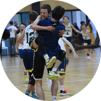

|  | Milos IlicBasketball player in the Brisbane Capitals I like to play basketball, code, I like to fly my drone but it is currently broken 😔 |
I went to the following schools:
I started basketball at the age of 7 and was a |
| Ball Handling | ⭐⭐⭐⭐⭐ |
| Iq | ⭐⭐⭐⭐ |
| Shooting | ⭐⭐⭐⭐ |
| Finishing | ⭐⭐⭐⭐⭐ |
| Defence | ⭐⭐⭐⭐ |
| Post | ⭐⭐ |
| Leadership | ⭐⭐⭐⭐⭐ |
| Determind | ⭐⭐⭐⭐⭐ |
| Work Ethic | ⭐⭐⭐⭐⭐ |
| Potential | ⭐⭐⭐⭐⭐ |